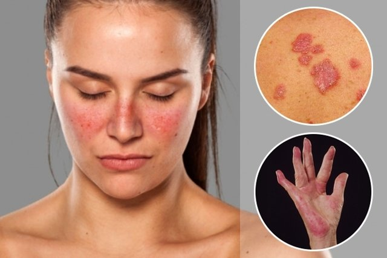
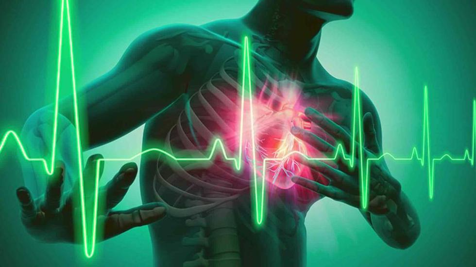
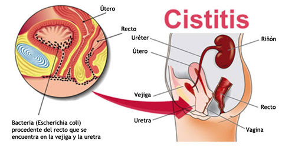
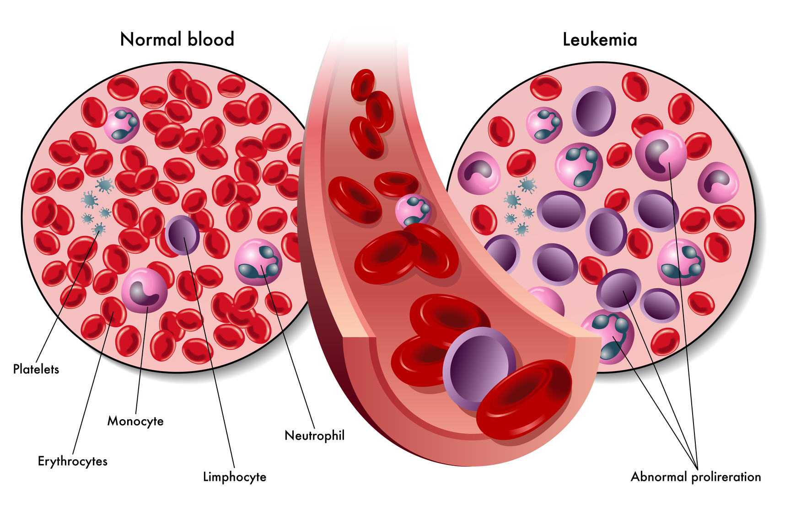
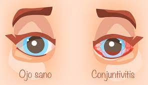
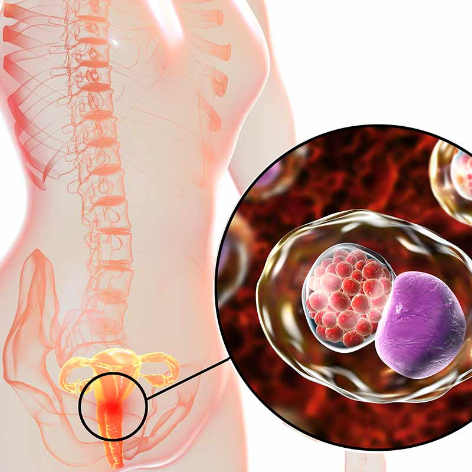

ENFERMEDADES
¿Qué es la enfermedad?
La definición de enfermedad según la Organización Mundial de la Salud (OMS), es la de «Alteración y desviación del estado fisiológico en una o varias partes del cuerpo, por causas en general conocidas, manifestada por síntomas y signos característicos, y cuya evolución es más o menos previsible».
El concepto de enfermedad es una aproximación que orienta sobre el tipo de problema de salud en cuestión, y ayuda a su entendimiento. Toda enfermedad tiene unas características concretas que la categoriza, y proporciona un punto de referencia para identificar qué puede tener en común o diferenciarse una entidad nosológica de otra.

Tipos de enfermedad
- Alergias (rinitis)

- Enfermedades Autoinmunes(lupus)

- Enfermedades Cardiovasculares(arritmia)

- Enfermedades de la mujer(cistitis)

- Enfermedades de la piel(acné)

- Enfermedades de la sangre(leucemia)

- Enfermedades de los ojos(conjuntivitis)

- Enfermedades de transmisión sexual(clamidia)

Fases o síntomas de la enfermedad
- Fase I, en la que se experimenta el síntoma.
- Fase II, en la que se asume el papel de enfermo.
- Fase III, en la que se toma contacto con el agente de salud.
- Fase IV, en la que el enfermo se hace dependiente del servicio de salud.
- Fase V, en la que tiene lugar la rehabilitación o recuperación o aceptación del estado de enfermedad si este es crónico.
COMPONENTES DE UNA ENFERMEDAD
Epidemiología
La epidemiología de una enfermedad también proporciona parámetros para determinar la importancia de una patología en particular en relación a su casuística (frecuencia de casos) y a la probabilidad de determinar una causa para tales casos.
Etiología
Para una enfermedad, la etiología es su causa principal identificada; representa el punto de partida para establecer la enfermedad
Patogenia
La patogenia de una enfermedad es la representación de los mecanismos alterados de la fisiología normal que generan, sostienen y finalizan o perpetúan el proceso patológico promovido por una causa (etiología).
Cuadro clínico
Cuadro clínico, manifestaciones clínicas o solo «clínica», es un contexto o marco significativo, definido por la relación entre los signos y síntomas que se presentan en una determinada enfermedad.
Síntomas
Son la referencia subjetiva que da el enfermo sobre la propia percepción de las manifestaciones de la enfermedad que padece. Los síntomas son la declaración y el relato del enfermo sobre lo que le sucede (véase anamnesis). Los síntomas, por su carácter subjetivo, son elementos muy variables, a veces poco fiables y no muy certeros; muchas veces, su interpretación puede ser difícil. Aun así, su valor en el proceso diagnóstico es indudable. El dolor es el principal síntoma que lleva al individuo a solicitar atención médica.
Diagnóstico
Es un complejo proceso que desarrolla el profesional, e implica una respuesta cognitiva ante el planteo de la situación del paciente. El diagnóstico puede determinar un estado patológico o no (también se diagnostica la salud en un paciente).
Anatomía patológica
El estudio anatómico e histopatológico permite indagar sobre la evidencia físico-química del proceso de enfermedad, que ha quedado plasmado en alteraciones de la morfología y fisiología normal a cualquier nivel (molecular, celular, tisular, orgánico, etc.). El resultado del estudio anatomo-patológico, generalmente, tiene carácter de diagnóstico definitivo.
Evolución
La evolución es el curso de acontecimientos biológicos entre la acción secuencial de las causas componentes (etiología) hasta que se desarrolla la enfermedad y ocurre el desenlace (curación, paso a cronicidad, o muerte). La historia natural de una enfermedad representa la evolución del proceso patológico sin intervención médica. Se habla de medicina preventiva cuando hay intervención médica con el objetivo de cambiar la evolución natural de la enfermedad hacia un curso más benigno para el paciente.
Tratamiento
Consiste en todas aquellas opciones ambientales, humanas, físicas, químicas, entre otras, que contribuyen a la curación del paciente, de su proceso, o bien a la atenuación de sus síntomas (tratamiento paliativo) para mejorar en lo posible su calidad de vida logrando su incorporación a la sociedad.
Pronóstico
Representa información de carácter estadístico sobre la tendencia que sigue un proceso patológico. Muchas variables deben ser tenidas en cuenta al momento de elaborar un pronóstico. No siempre es posible pronosticar la evolución de una enfermedad, con o sin tratamiento.
Prevención
La prevención o profilaxis es información concerniente a actuaciones que modifican la probabilidad de enfermar, disminuyendo los riesgos. La prevención comporta medidas de actuación, orientadas a evitar la enfermedad y a mejorar el estado de salud.